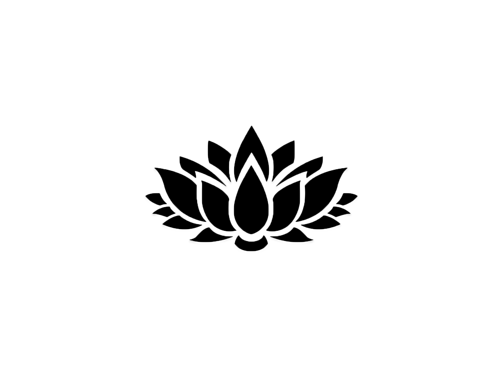

In Buddhism, the lotus is a symbol of the Buddha’s awakening and a reminder that all beings have the same potential to attain enlightenment. The lotus grows out of mud and rises to the water’s surface to bloom in beauty and purity, so too can the human develop the virtues of a Buddha and rise above desire and attachment to reveal the true nature.
The stage of the lotus flower represents the stages on the spiritual path. For example, a closed bud is synonymous with the beginning of the journey. A partly open flower indicates walking the path. A fully blooming flower signifies the end of the journey--enlightenment.

Two halves that together complete wholeness. Yin and yang are also the starting point for change. When something is whole, by definition, it’s unchanging and complete. So when you split something into two halves – yin/yang, it upsets the equilibrium of wholeness. Both halves are chasing after each other as they seek a new balance with each other.

The ancient swastika is one of the oldest symbols on Earth. It is a symbol of peace, good luck, and positivity, predating the Indus Valley Civilization and is found in the art of many cultures: Egyptians, Romans, Celts, Greeks and Native Americans. It is also used in Vedic mathematics. The Sanskrit translation means "to be good," or “being with higher self.”
In Buddhism, the swastika symbolizes the seal of the Buddha’s heart and contains within it the entire mind of the Buddha. It can be seen imprinted on the body, palms, chest, or feet of Buddha images. In China, the swastika represents the number ten thousand (wan), meaning infinity and auspiciousness.

Dragons have existed throughout all cultures, and these powerful creatures can appear to you as spirit guides, offering you wisdom, guidance, and support. A dragon symbolizes that your spiritual journey is about to enter new territory. Spirit dragon symbols represent a new chapter beginning in your life.

The Sun has a triple function. On the physical level, the Sun energizes the life potential within each cell and atom; it is the “Breath of Life”. On the spiritual level, the Sun is Life Itself, the divine expression of the “Will to Be”. On the Soul level, the Sun is the source of consciousness.

The moon is a feminine symbol, universally representing the rhythm of time as it embodies the cycle. The phases of the moon symbolize immortality and eternity, enlightenment or the dark side of Nature herself.
The color blue vibrates magically with truthfulness, conviction and sincerity. Blue is the color of loyalty. Blue never likes to be centre stage and avoids conflict, making it a powerful color ally for peace.
Red is the color that speaks heavily to our inner power. Red symbolises passion, exhilaration, and excitement.
The color black symbolises authority, power, and higher learning. It can be an intimidating color, especially since, in most cultures, the color black represents death. But, like death, power is an illusion.
The color green symbolises finding balance between your head and your heart. In nature green means growth, renewal, and represents and season of spring.
The color gold is the color of success, achievement and triumph. This is a color which is associated with higher ideals, wisdom, understanding and enlightenment. It inspires knowledge, spirituality and a deep understanding of the self and the soul.

In the world of symbolism white is the color of purity and flawlessness. It also represents virtue, fullness and new beginnings. It offers hope and relief of stress.